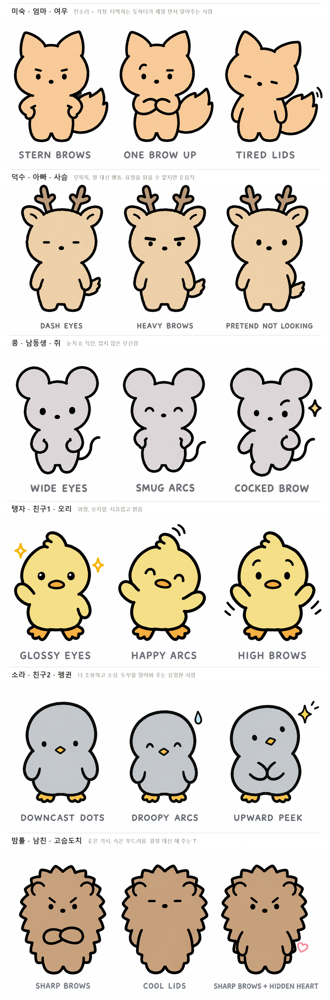

조연 6인 기본 표정 후보 3안 합본
두부처럼 조연도 무표정 대신 성격이 드러나는 기본 얼굴을 고르기 위한 후보. 몸·색은 시트 그대로, 눈·눈썹·자세·기호만 변경. 캐릭터별로 따로 생성(각 시트 + 깜자 1장 참조, medium)해 한 장으로 합침. 프롬프트: assets/samples/faces/<이름>-faces-prompt.txt

| 미숙 | 1 STERN BROWS 낮게 깔린 일자 눈썹 + 허리 손 · 2 ONE BROW UP 한쪽 눈썹만 치켜듦 + 팔짱 · 3 TIRED LIDS 반쯤 감긴 대시 눈 + 꼬리 살랑 |
|---|---|
| 덕수 | 1 DASH EYES 대시 눈(무표정 고정) · 2 HEAVY BROWS 굵은 일자 눈썹 · 3 PRETEND NOT LOOKING 점 눈 곁눈질 + 한 손 등 뒤 (생성 결과는 곁눈질이 약함) |
| 콩 | 1 WIDE EYES 큰 동그란 눈 + 귀 쫑긋 · 2 SMUG ARCS 웃는 호 눈 + 가슴 펴기 · 3 COCKED BROW 한쪽 눈썹 + 반짝이 + 걸음 |
| 탱자 | 1 GLOSSY EYES 하이라이트 눈 + 손 인사 + 반짝이 · 2 HAPPY ARCS 웃는 호 눈 + 날개 활짝 · 3 HIGH BROWS 눈썹 높이 뜸(늘 놀람) + 날개 위로 |
| 소라 | 1 DOWNCAST DOTS 바닥 보는 점 눈 + 날개 밀착 · 2 DROOPY ARCS 처진 호 눈 + 땀방울 · 3 UPWARD PEEK 위로 곁눈질 + 날개 모음 + 반짝이 |
| 밤톨 | 1 SHARP BROWS 가운데로 내려간 눈썹 + 팔짱 · 2 COOL LIDS 대시 눈 + 턱 들기 · 3 SHARP BROWS + HIDDEN HEART 같은 눈썹 + 등 뒤 작은 하트 |